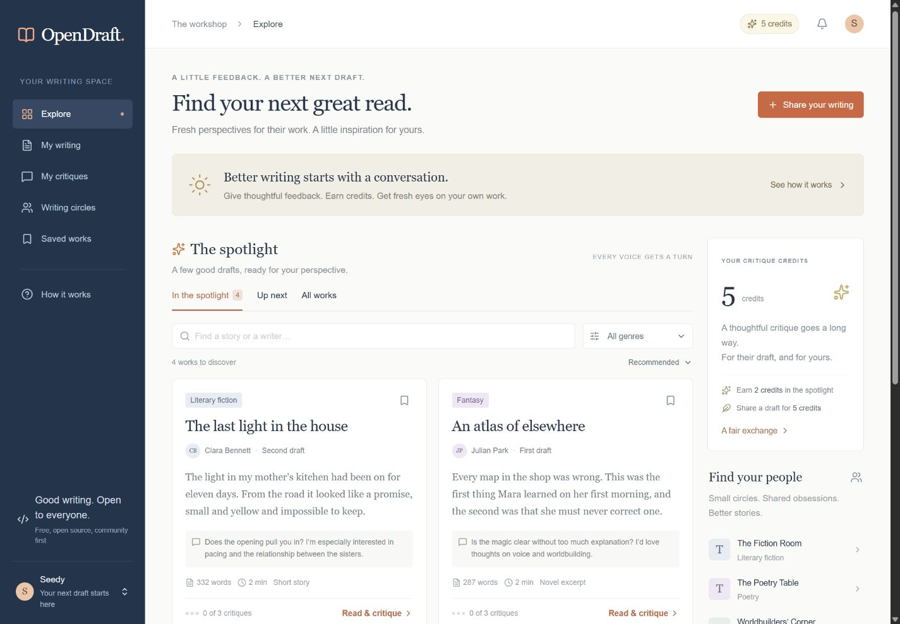

OpenDraft
A free writing workshop. Give thoughtful feedback, earn credits, and find fresh eyes for your next draft.

OpenDraft connects writers through reciprocal critique. Publish a story or an excerpt, ask for specific feedback, and read work from other writers. A credit exchange and a first-in, first-out reading-room queue give each piece a turn in the spotlight.
A workshop built around the manuscript
- Write and autosave private drafts, publish revisions, and organize numbered parts of a larger work.
- Read in focus mode and leave passage annotations alongside structured critiques.
- Find writing circles, save work, follow revisions, and manage feedback in an inbox.
Writing and critiques are human-written. Quality checks evaluate feedback; they do not compose it. Public ratings and final showcase decisions remain human.
The open-source application uses TypeScript, React, Next.js, and PostgreSQL. The repository includes the workshop rules, database migrations, and setup instructions.